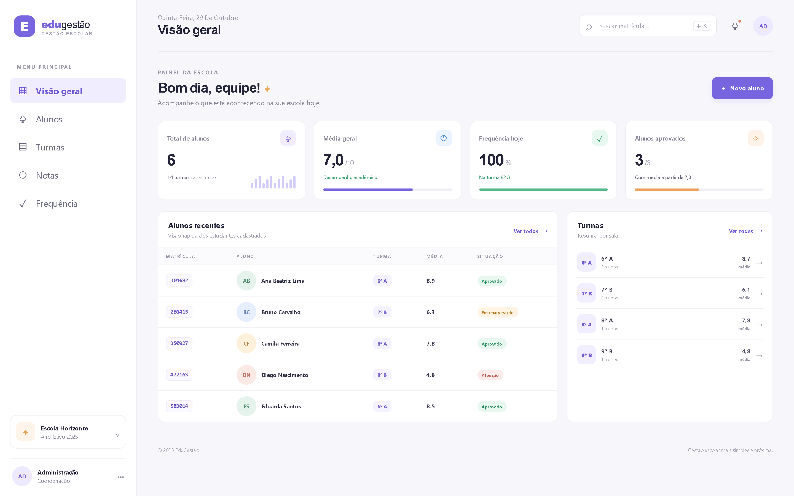
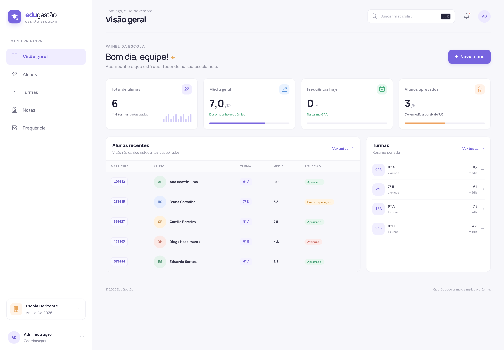
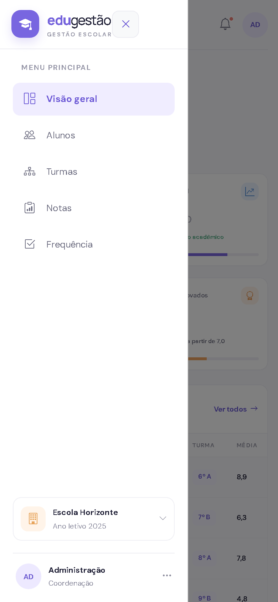

offcanvas-lg
Menu lateral
Fixo no desktop; gaveta lateral abaixo de 992px. O estado menuAberto do Vue controla a classe show.
responsivo
2ª avaliação · apresentação
Do CSS artesanal ao Bootstrap 5: como um framework CSS deixou um painel escolar em Vue 3 mais consistente, responsivo e fácil de manter — sem refazer o projeto.
Slide 01 · Projeto e framework
A proposta, as telas e as regras de negócio da 1ª avaliação continuam as mesmas. O que mudou foi a base visual.
Painel para professores e coordenação acompanharem alunos, turmas, notas e frequência. Os dados ficam no navegador e toda a interface reage às mudanças de estado do Vue.
O que foi preservado: CRUD de alunos, cálculo de médias, chamada diária, busca por matrícula e persistência local.
Framework escolhido para dar base de componentes e responsividade sem apagar a identidade do EduGestão.
Alternativas consideradas: Tailwind exigiria reescrever o CSS utilitário em todas as telas; Bulma tem ecossistema menor de componentes prontos. Bootstrap ofereceu o melhor custo-benefício para evoluir o que já existia.
Slide 02 · Integração e implementação
O Bootstrap entra como dependência do projeto; o tema do EduGestão é carregado depois e ajusta cores, fontes e espaçamentos.
# dependências versionadas no package.json npm install bootstrap bootstrap-icons
import 'bootstrap/dist/css/bootstrap.min.css' import 'bootstrap-icons/font/bootstrap-icons.css' import './assets/main.css' // tema por último
offcanvas-lg
Menu lateral
Fixo no desktop; gaveta lateral abaixo de 992px. O estado menuAberto do Vue controla a classe show.
row · col · row-cols-xl-4
Grid dos cards
2 cards por linha no celular e 4 no desktop, com g-3 para espaçamento consistente.
card · card-body · h-100
Cards de indicadores
Estrutura pronta de card e altura igual entre os itens da mesma linha.
table-hover · table-responsive
Tabelas
Padrão visual, destaque na linha e rolagem horizontal no celular sem quebrar o layout.
modal · form-control · is-invalid
Cadastro de aluno
Modal centralizado, campos padronizados e estado visual de erro na validação.
badge · rounded-pill · progress
Status e indicadores
Selos de situação e barras de progresso com largura calculada por computed.
Slide 03 · Evolução visual
Capturas reais da aplicação. A versão anterior foi preservada em docs/antes-*.png para comparação.


Slide 04 · Demonstração e conclusão
Roteiro de 90 segundos para a demo ao vivo, seguido das vantagens, dificuldades e aprendizados do grupo.

Demo no celular Abra o menu, navegue e mostre a tabela rolando na horizontal. É o mesmo componente Vue, só com o offcanvas do Bootstrap.
Obrigado
Projeto, código e capturas estão no repositório. A aplicação está publicada no GitHub Pages e pode ser aberta no celular.
Apresentação de Front-End Frameworks · 2ª avaliação · novembro de 2026.